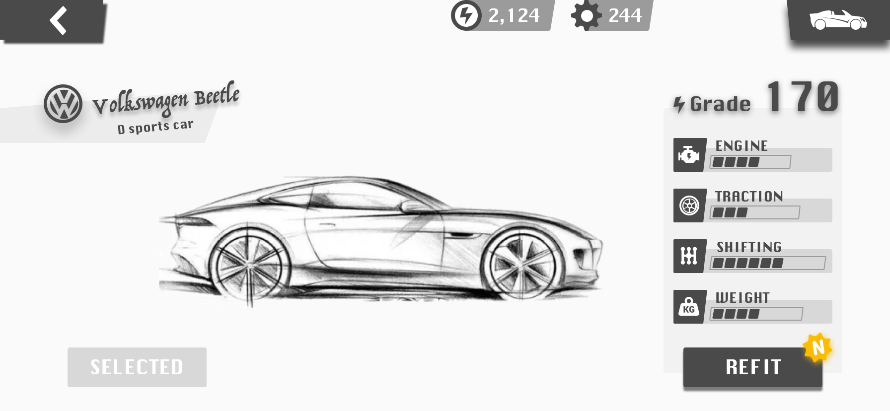
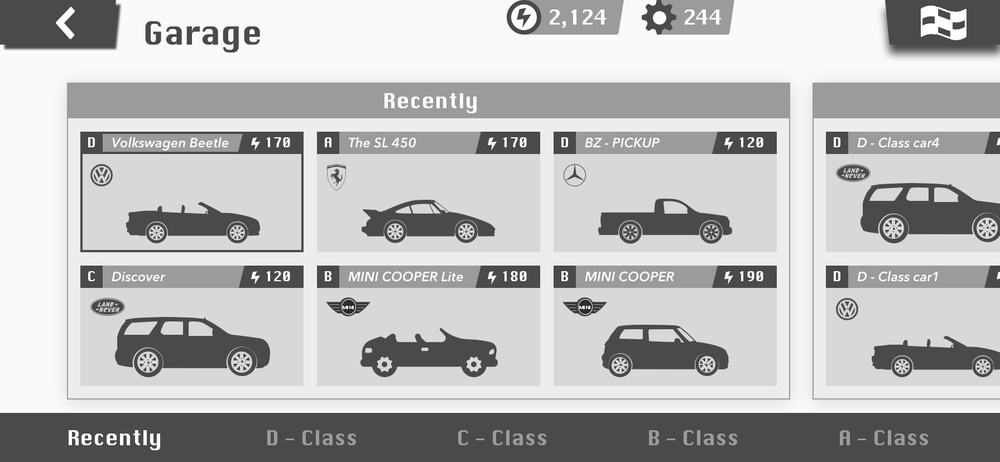
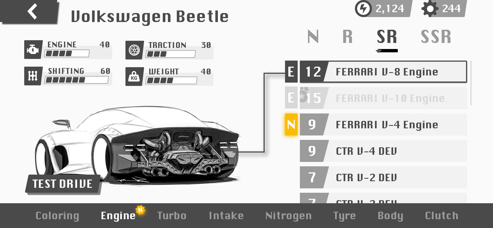
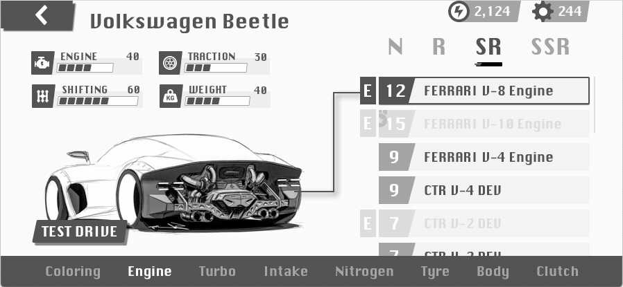
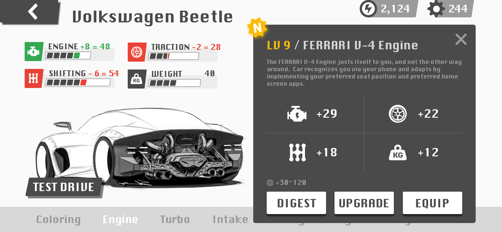
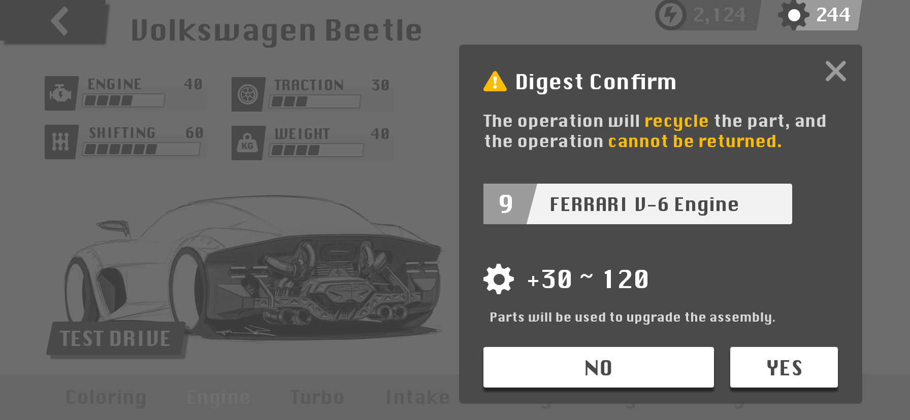
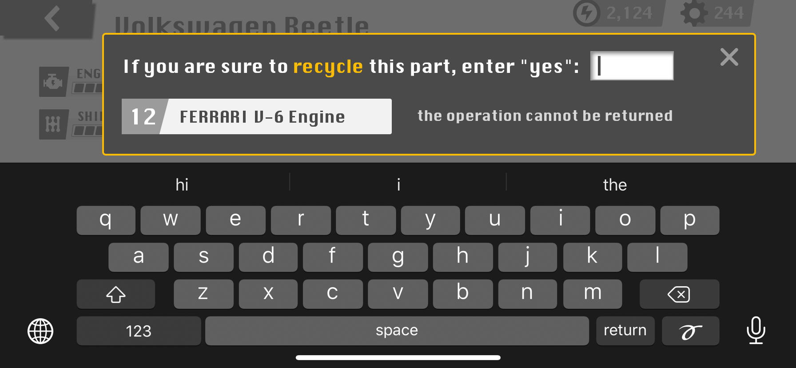
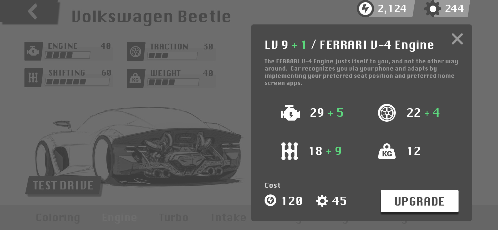
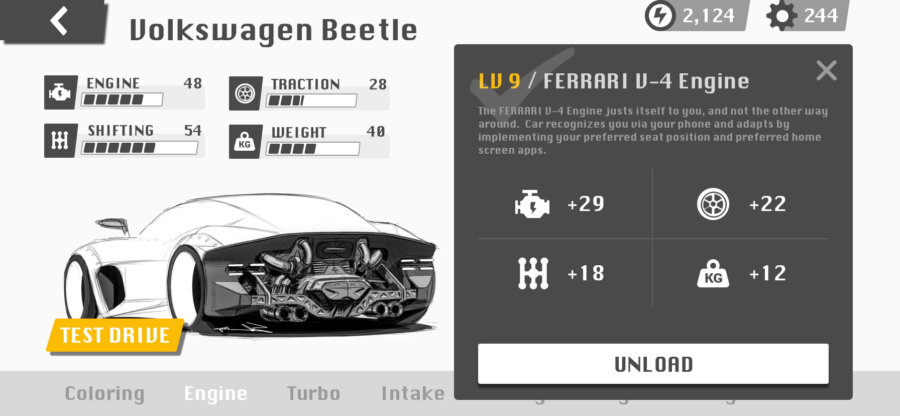
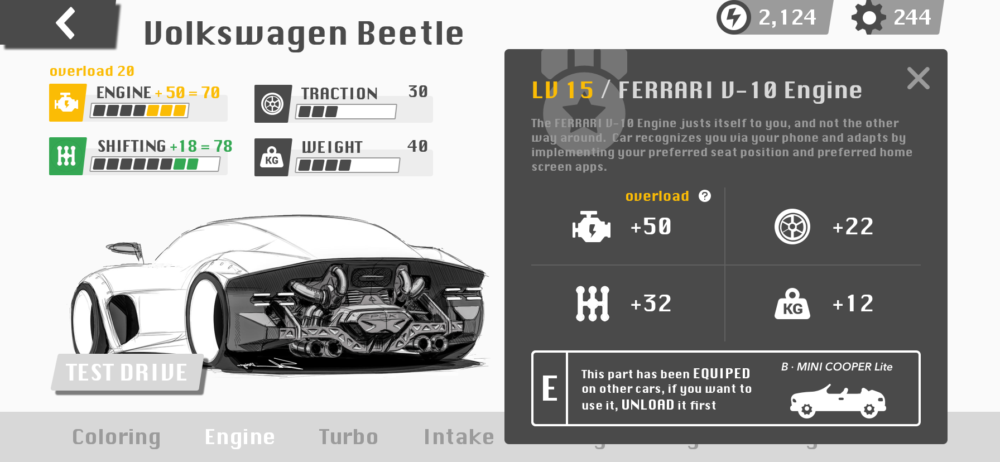

测试题答卷（汽车改装）
批改作业绝对不是个轻松的差事... 谢谢你看到这里。
下面的内容是针对测试题的一些最基础构思，它专为这次测试而设计，所以它们并未进行过足够“深刻”的调研和准备，仅仅凭借着一些往日的游戏感觉拼凑而成。由于时间限制，仍有一些设计细节和想法没有被照顾和体现，很期待有机会能与你进一步讨论 ：）
测试内容是页面，为了能让页面“说话”，我将尽可能搭配少量的文字描述。但关于这次的设计，有三点值得一提：
1. 设计尽可能遵从了 Apple HIG 与 Google Material Design 的底层实践；
2. 设计使用较高细腻度的 4px 网格系统以保证原型的几何韵律；
3. 由于暂不了解网易内部的设计话术，下方的文字描述风格将尽可能“直白”。
TIP：本页面采用了 APPLE 的主题适配技术，苹果设备可通过系统更换 明/暗 主题。
TIP：本页面的图片使用了交错式 PNG，部分过于传统的浏览器版本可能无法支持这一特性，您可以点击 这里 查看本答卷的 PDF 版本。
目录
一、车辆概览
二、车库
三、部件（拆解）
四、部件（升级）
五、部件（装备）
一、车辆概览
开始游戏，可通过「首页」的某个位置，进入「车辆概览页」。
改装按钮上的“黄色标识”用于提醒查看库中的“新部件”。

二、车库
进入车库有两种方法：
方法 1：在「游戏首页」点选“车库按钮”（未绘制）；
方法 2：在「车辆概览页」点选“右上角的车辆图标”进入「车库页」。
在「车库」中：
1. 首屏可看到最近使用的 6 台车；
2. 通过右上角的旗帜可直接进入比赛（减少按返回按钮次数）；
3. 底部导航可快速检索车库 最近使用/各类等级 的车辆。


* 暂未设计更多的排序方式，是因为当前车库中较为“密集”的“车辆排列”以及更多的科学考量，咱们有机会再续。
三、部件（拆解）
从「车辆概览页」进入「REFIT 装配页」有两种方法：
方法 1: 点击右下角的“REFIT（装配）”按钮，或右侧的车辆属性值区域；
方法 2: 点击中间的车辆。
由于“新部件”的被关注度可能会高于其他部件，所以从上一页面进入本页面时，应直接跳转到能看到（黄色N）部件的分类和位置。
例如，玩家获得了一个新的发动机，所以打开「装配页」后，直接跳转到了发动机分类中“新部件”的位置（如下图所示）。
其中，部件等级旁边的：
黑色 E 标志：表示该部件已经被当前的车辆装备（滚动查看部件时，该部件置顶）；
灰色 E 标志：表示部件已经被其他车辆装备；
黄色 N 标志：表示新部件。

在「装配页」底部，可切换部件类型。
在「装配页」右侧，可通过上下滚动查看库存部件。

* 将“Coloring 涂装部件类别”放在部件分类的第一位，有两个考虑：一是它可能会常用，二是将它的设计有别与其他部件类型（该页面原型需要单独制作）。
部件详情页中可执行三个操作：拆解、升级、装备，本节演示“拆解”；

点击 DIGEST（拆解）按钮。
遮盖部分背景，让用户更加专注于当前的操作，但这一步操作关乎于“零件”的数量，它不应该被遮蔽。

* 弹性的零件数可能更会让玩家“上瘾”；
如果拆解的零件等级较高，或许需要“确认操作”。

四、部件（升级）
未达到满级的部件可进行升级。点击 UPGRADE（升级）按钮。
遮盖部分背景，让用户更加专注于当前的操作，但这一步操作关乎于“游戏货币 & 零件”的数量，它不应该被遮蔽。

五、部件（装备）
未被装备的部件可以直接进行装备， 点击“EQUIP（装备）”按钮后，“TEST DRIVE 试驾按钮”的显示优先级被提高；

如果“部件”已被备其他车辆的装备，则需要先将其卸下，再执行“装备”操作。
1. 针对满级装备进行“装饰强化”，有助于区别于未满级装备；
2. 如果这个“15级的部件”用在这辆车上，会出现属性溢出“OVERLOAD”。

* 在设计中，故意没有给出「装备其他车辆正在使用的“部件”」的操作捷径，是因为有更多的潜在考虑，其中之一是“不希望用户仅仅使用和维护单一的某个类型部件（如发动机）”。
完。
谢谢滑动，如有兴趣你还可以在 这里 查看更多关于我做的一些事情与爱好 ：）